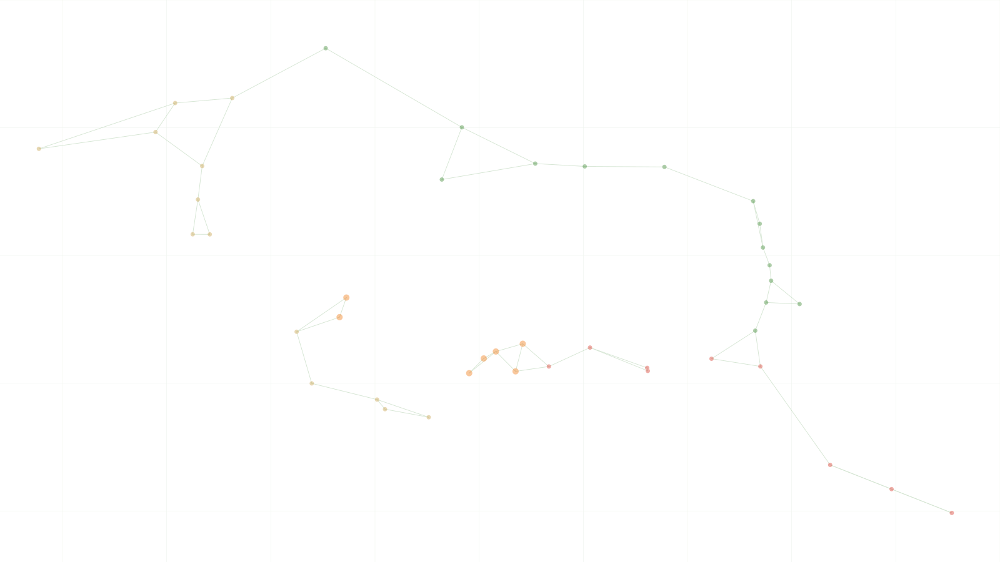

Grupo de Investigación Pensamiento Caribe
Pensar desde nuestra orilla
Pensar el Caribe desde sus territorios, luchas y formas de vida
Pensamiento Caribe investiga, enseña, archiva y hace circular pensamiento caribeño desde el Caribe colombiano, en relación con el Gran Caribe.

Qué es
Cuatro maneras de trabajar el Caribe
Pensamiento Caribe es un grupo de investigación, un archivo vivo, un aula pública y un laboratorio de humanidades digitales dedicado al Caribe negro, popular e indígena.
Grupo de investigación
Seis líneas, siete proyectos y una producción intelectual de más de cincuenta piezas.
En marchaArchivo vivo
El atlas del Gran Caribe, la cartografía sonora del Atlántico Negro, la filmoteca crítica y las efemérides.
En construcciónAula pública
Metodologías publicadas, guías de uso y bibliografías abiertas. El Semillero Eleguá como espacio formativo.
En construcciónLaboratorio digital
Corpus citables con DOI, datos abiertos en Zenodo y visualizaciones con metodología declarada.
En marchaEl Caribe como unidad
El Gran Caribe: una relación de orillas
El borde costero que configura el mar Caribe forma una unidad geográfica, histórica y política. El Caribe Colombiano es una orilla de ese todo mayor. Una constelación de territorios articulada por el mar.
Selecciona un nodo del mapa para ver su ficha.
Claves de pensamiento
Formas culturales
Cómo leer el mapa
Este mapa es el territorio que habita nuestro logo: la región que delimita el mar Caribe. Cada nodo es un puerto, ciudad o territorio del Gran Caribe; las capas agrupan regiones por su lugar en la unidad caribeña: archipiélagos, costas continentales, Guyanas y Golfo. El mapa dibuja un pensar archipiélico, con Édouard Glissant: islas y orillas que se relacionan sin fundirse, una poética de la relación, sobre un mar histórico, con Derek Walcott: «the sea is history», el mar como archivo de la trata, las travesías y las resistencias. El Caribe Colombiano aparece destacado como orilla de enunciación del grupo. Haz clic en cada punto para ver su leyenda: historia, cultura popular, figuras y claves de pensamiento.
Ver los 43 nodos en tabla
| Región | Nodos |
|---|---|
| Caribe colombiano | 5 |
| Caribe insular colombiano | 2 |
| Antillas Mayores | 6 |
| Antillas Menores | 8 |
| Caribe centroamericano | 8 |
| Caribe venezolano | 5 |
| Golfo de México | 3 |
| Guyanas | 3 |
| Caribe mexicano | 2 |
| Caribe suroriental | 1 |
Desde dónde pensamos
Un Caribe que piensa desde sus propias relaciones
“Pensar desde nuestra orilla no significa hablar desde el margen, sino desde una posición histórica capaz de interrogar el centro.”
Pensamiento Caribe parte de una convicción: el Caribe no es margen, sino una zona histórica donde se cruzan modernidad, racialización, violencia, creación y resistencia. Investigar desde el Caribe implica escuchar territorios heridos, cuerpos que recuerdan y formas de pensamiento que han sido sistemáticamente silenciadas.
La antropología del Caribe que proponemos parte de un lugar específico: el Caribe Colombiano, una orilla en tensión entre Colombia, la antropología nacional y el Gran Caribe.
Leer el manifiesto →Investigación
Líneas de investigación
Antropología del Caribe
Estudia el Caribe como formación histórica, cultural y política, atendiendo a sus territorios, movilidades, memorias, desigualdades y formas de vida.
Ver publicaciones relacionadas →Filosofía afrocaribeña
Explora tradiciones de pensamiento negro y afrocaribeño, sus críticas a la modernidad racial y sus formas de imaginar libertad, humanidad y mundo.
Ver publicaciones relacionadas →Teoría crítica de la raza y antirracismo
Analiza la producción histórica de la raza, las formas contemporáneas del racismo y las prácticas intelectuales, pedagógicas y políticas del antirracismo.
Ver publicaciones relacionadas →Geografías negras y territorio
Investiga las relaciones entre racialización, espacio, territorio, ciudad, paisaje, despojo y producción de lugares negros en el Caribe Colombiano.
Ver publicaciones relacionadas →Capitalismo racial, plantación y modernidad caribeña
Examina la plantación, el trabajo racializado, la acumulación, el extractivismo y las infraestructuras históricas que han configurado la modernidad caribeña.
Ver publicaciones relacionadas →Culturas populares y expresiones afrocaribeñas
Estudia las formas expresivas, festivas, musicales, corporales, narrativas y estéticas mediante las cuales las comunidades afrocaribeñas producen memoria, pertenencia, crítica social y presencia histórica.
Ver publicaciones relacionadas →Salud intercultural y cuidado
Investiga el cuidado como práctica situada: los modelos de salud de los pueblos indígenas y afrodescendientes del Caribe Colombiano, la historia social de la enfermería y las tensiones entre saberes médicos y saberes comunitarios.
Ver publicaciones relacionadas →Territorio
Investigaciones en curso
Preguntas situadas, metodologías colaborativas y productos abiertos.
Con el agua de por medio
Doscientas tres obras y cuatrocientas veintinueve relaciones organizadas por diez fenómenos transversales —colonialidad, postplantación, capitalismo racial, cimarronaje, creolización— en lugar de por fronteras nacionales.
Ver la ficha del proyecto →Con el vaivén de las corrientes
Mapa interactivo que conecta el Gran Caribe con África por la música, la negrura y el panafricanismo. Veintiséis rutas de ida y vuelta, del gumbé que volvió a Freetown a la champeta con que Palenque respondió.
Ver la ficha del proyecto →La negrura frente a la blanquitud monumental
Sobre la asimetría entre negrura y blanquitud monumental: lo que hace el monumento cuando se vuelve paisaje, archivo e institución, y lo que ocurre cuando cambia de material y se vuelve modelo algorítmico.
Ver la ficha del proyecto →Cartografías Negras del Magdalena Grande
Investigación participativa con comunidades negras de Codazzi, Maicao y Santa Marta. Los talleres de cartografía social activaron procesos colectivos de memoria y reconocimiento territorial.
Ver la ficha del proyecto →Aula en construcción
Recursos para estudiar el Caribe
Material publicado y consultable hoy. Videos, pódcast y registros de campo se recogen en la filmoteca y en las páginas de cada proyecto.
Metodología del atlas
Criterios de inclusión, regla de corroboración, flujo de trabajo y limitaciones declaradas del corpus.
Leer la metodología →Filmoteca crítica
Cine y documental para pensar desde nuestra orilla, con ficha, país y claves de lectura.
Entrar a la filmoteca →El reflujo · guía de uso
Cómo proponer una obra, trazar una corriente o corroborar un vínculo dentro del atlas.
Leer la guía →Corpus abiertos
Los datos del atlas y de la cartografía sonora, depositados en Zenodo con identificador persistente.
Consultar en Zenodo →Encuentro anual
Semana Antirracista y Decolonial
Un encuentro anual para estudiar las raíces históricas del racismo, compartir prácticas de resistencia y construir horizontes de justicia desde el Caribe. Cuatro ediciones celebradas, con su declaración, sus programas y sus memorias.

Columnas
Pregón de esquina
Pensamiento en voz alta desde la esquina, el aula, el barrio, el archivo y la coyuntura. Lo que el grupo piensa sobre los debates de su campo y las noticias del día.
Leer el Pregón →Archivo
Producción intelectual
Cincuenta y cuatro piezas en el catálogo: libros, artículos arbitrados, capítulos, poesía y prensa. Estas son las seis más recientes.
Gramáticas e iconografías populares: el Picó y la tradición picotera en Santa Marta
Juan Carlos Gómez Blanco
Capítulo de libro · en Raíces, Resistencias y Territorios: 500 años de experiencia afro en Santa Marta · Editorial UnimagdalenaEl Picó en el performance cultural afrocaribeño
Juan Carlos Gómez Blanco
Artículo de reflexión · Nueva Revista Colombiana del Folclor No. 34 · Patronato Colombiano de Artes y CienciasEl Club Negro de Colombia
Rosa María Chamorro Cuello
Texto · Archivo General de la Nación de Colombia & Ministerio de las Culturas, las Artes y los SaberesLas Estrellas son Negras. Invocación a Arnoldo Palacios en los cien años de su natalicio
Rosa María Chamorro Cuello
Texto · Chocó 7 DíasVínculo
Una investigación hecha en relación
Catorce investigadoras e investigadores, el Semillero Eleguá y tres redes aliadas: el Grupo de Trabajo de CLACSO sobre antirracismo y afrodescendencia en el Sur Global, GLEFAS y Malunga. El trabajo se hace con comunidades, no sobre ellas: los talleres de cartografía social, las memorias barriales y los archivos sonoros salen de procesos colectivos.

Caridad Brito Ballesteros

Deibys Carrasquilla Baza

Demetrio Ribeiro De Andrade

Dakna Davraiskí Alvarado Maestre

Dayana Granados Hernández

Everleidis Tatiana Dávila Sanabria
Formación
Semillero de Investigación Eleguá
Formación investigativa
Acompañamiento en la construcción de proyectos de investigación situados, con énfasis en metodologías participativas, pensamiento crítico y ética territorial.
Lectura crítica y creación
Espacios de lectura colectiva, discusión teórica e investigación-creación que articulan la escritura académica con las artes, el audiovisual y la oralidad del Caribe.
Trabajo situado y comunidad
Participación en procesos territoriales, comunitarios y de cuidado que vinculan la formación académica con las realidades del Caribe Colombiano.
“Pensar desde nuestra orilla es escuchar el Caribe como archivo vivo, herida abierta y horizonte de imaginación política.”
Pensamiento Caribe abre un espacio para pensar, investigar y acompañar críticamente las vidas, territorios y luchas del Caribe Colombiano.